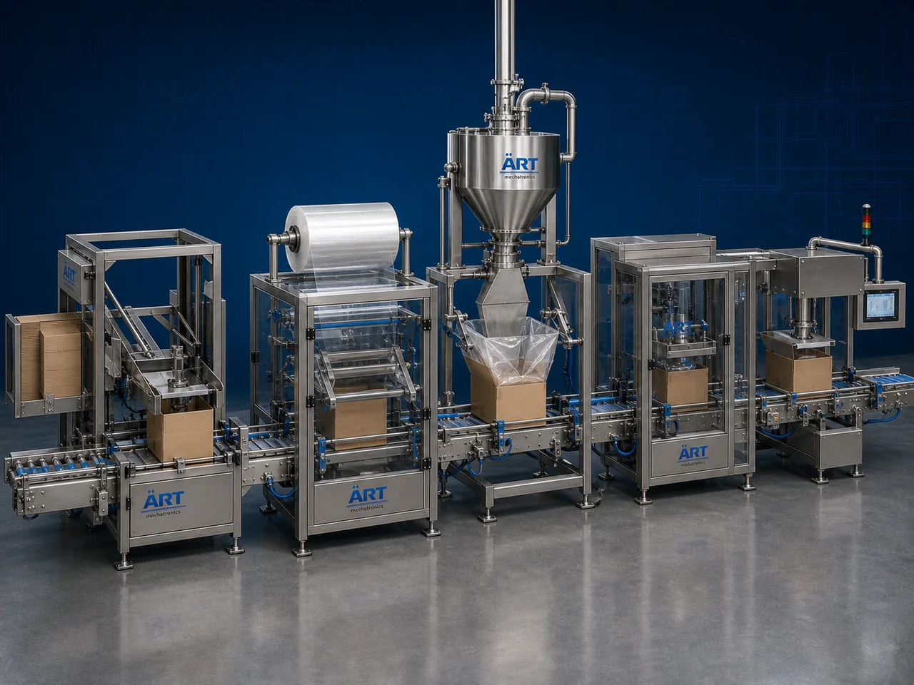

Lined Carton Packing Machine (Automatic Lined Carton Filling & Packing System)
A Lined Carton Packing Machine, also known as a Lined Box Packing Machine, Inner Lined Carton Packaging Machine, Carton Filling & Lining Machine, or Automatic Lined Carton Packaging System, is an advanced industrial packaging solution designed for automatic carton feeding, inner liner insertion, product filling, carton folding, sealing, coding, and high-speed retail packaging operations for tobacco products, shisha products, tea products, spices, FMCG goods, and premium consumer packaging applications.

About the Lined Carton
Lined carton packing systems are widely used for:
- Tobacco carton packaging
- Shisha carton packing
- Tea box packaging
- Spice carton packaging
- FMCG retail packaging
- Premium moisture-protected packaging
- Secondary packaging operations
- Export-grade retail packaging
The machine improves:
- Product freshness protection
- Moisture resistance
- Packaging appearance
- Product hygiene
- Shelf appeal
- Production efficiency
- Packaging consistency
Industrial lined carton packing machines use:
- Automatic carton feeding systems
- Inner liner feeding mechanisms
- Servo synchronized product handling
- PLC and HMI automation controls
- Precision carton folding and sealing systems
to automatically line, fill, and seal cartons with superior packaging quality and high production efficiency.
Lined carton packing machines are widely used in industries such as:
Shisha tobacco industries Cigarette industries Tea industries Spice industries Pan masala industries Food processing industries FMCG industries Consumer goods industries
where moisture protection, aroma retention, and premium retail presentation are essential.
The machine is highly suitable for:
- Shisha tobacco carton packaging
- Cigarette carton packaging
- Tea carton packing
- Spice box packaging
- Premium FMCG packaging
- Moisture-protected retail packaging
ART Mechatronics offers high-performance lined carton packing machines, engineered for continuous industrial operation, accurate product handling, premium packaging quality, and reliable long-term packaging automation.
Working Principle of Lined Carton Packing Machine
- 1. Carton Feeding Flat cartons are loaded into automatic carton feeding magazine.
- 2. Inner Liner Feeding Process Machine automatically feeds and inserts liner material into cartons.
Servo synchronization ensures accurate liner positioning and smooth carton handling.
- 3. Product Filling Operation Machine handles: ✔ Shisha tobacco ✔ Tea products ✔ Spice products ✔ FMCG products ✔ Tobacco products ✔ Consumer goods
accurately and continuously.
- 4. Carton Folding & Sealing Process Machine performs: Carton folding Flap locking Glue sealing Inner liner sealing Barcode printing
for premium retail packaging quality.
- 5. Coding & Inspection Integration Optional systems include: Batch coding Date printing QR code printing Vision inspection Check weighing
- 6. Finished Carton Discharge Finished lined cartons discharged automatically for: Case packing Palletizing Dispatch operations Retail distribution
Types of Lined Carton Packing Machines
- 1. Tobacco Lined Carton Machine Designed for: ✔ Cigarette and shisha tobacco packaging applications
- 2. Tea Box Lining Machine Suitable for: ✔ Tea and beverage packaging systems
- 3. Spice Carton Packing Machine Uses: ✔ Spice and seasoning retail packaging systems
- 4. FMCG Lined Carton Machine Designed for: ✔ Consumer goods and premium retail packaging systems
- 5. Servo Driven Carton Packing Machine Suitable for: ✔ Precision high-speed carton packaging operations
- 6. Fully Automatic Lined Carton Packaging System Designed for: ✔ Complete industrial retail packaging automation lines
Industries Using Lined Carton Packing Machines
🚬 Tobacco Industry Shisha tobacco, cigarette products, oral nicotine products, and smokeless tobacco lined carton packaging systems. 🍃 Tea Industry Tea box packaging and aroma-protected retail packaging systems. 🌶️ Spice Industry Masala products, seasoning products, and spice carton packaging systems. 🛒 FMCG Industry Consumer product lined carton and premium retail packaging systems. 🍃 Food Processing Industry Food product retail carton and moisture-protected packaging systems.
Features & Advantages
- High-speed automatic lined carton packing operation
- Accurate liner insertion and product filling systems
- Premium moisture-protected retail packaging appearance
- PLC and servo automation control systems
- Improves product freshness and aroma protection
- Reduces packaging wastage and labor dependency
- Supports multiple carton sizes and product formats
- Reliable long-term industrial performance
- Smooth and continuous packaging operation
Technical Highlights
Machine Type: Automatic lined carton packing machine Inner lined carton packaging machine Retail carton packaging system Packaging Material: Mono cartons Paperboard cartons Inner liner films Retail cartons Feeding Integration: Automatic product feeding systems Servo product handling systems Liner insertion systems Features: PLC control system Servo synchronization Touchscreen HMI Batch coding integration Barcode printing system Sealing Type: Glue seal Flap locking system Inner liner sealing Automation: Semi-automatic Fully automatic industrial systems
Turnkey Lined Carton Packing Solutions
ART Mechatronics offers: Complete lined carton packaging systems Automatic carton lining and packing solutions Packaging automation integration systems Conveyor synchronization systems Installation & commissioning After-sales service & AMC
Why Choose Art Mechatronics
Expertise in industrial packaging and automation systems Customized lined carton packing solutions for multiple industries High-performance and durable packaging technology Advanced PLC and servo automation systems Proven industrial packaging performance across sectors
Applications
Shisha Tobacco Manufacturing Plants Cigarette Packaging Units Tea Processing Industries Spice Packaging Facilities FMCG Packaging Industries Food Processing Industries
Get pricing & specs for the Lined Carton
Share the product, target capacity, current process and plant location. These details help our engineers discuss the right machine or line configuration.
One partner, from design to start-up
ART Mechatronics designs, manufactures, installs and commissions your Lined Carton solution with regional presence in India, UAE and Thailand.